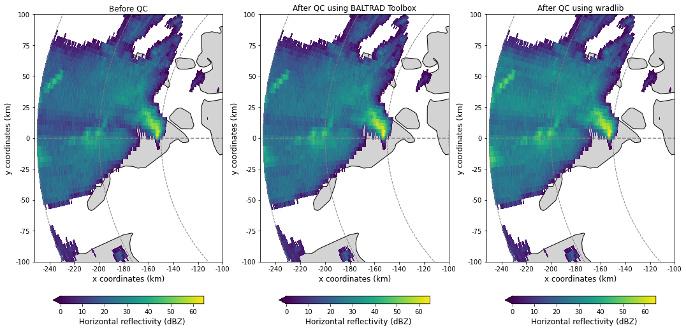

Interaction of BALTRAD and wradlib via ODIM_H5
Prepare your environment
%matplotlib inline
import numpy as np
import matplotlib.pyplot as plt
from matplotlib.patches import Polygon
from matplotlib.collections import PatchCollection
import matplotlib.ticker as mticker
import wradlib
import shapefile
import gc
Run BALTRAD’s odc_toolbox
First, you will process a scan from Suergavere (Estland) by using BALTRAD’s odc_toolbox.
From your VM’s vagrant directory, navigate to the folder /baltrad2wradlib.
Execute the following command:
$ odc_toolbox -i in -o out -q ropo,radvol-att
Check whether a file was created in the folder /out.
BALTRAD will not create output files if these already exist. You can check that via !ls out.
!odc_toolbox -i in -o out -q ropo,radvol-att
/usr/share/miniconda3/envs/cookbook-dev/rave/Lib/rave.py:244: SyntaxWarning: "is" with a literal. Did you mean "=="?
if typ is 'dataset':
/usr/share/miniconda3/envs/cookbook-dev/rave/Lib/rave_info.py:87: SyntaxWarning: "is" with a literal. Did you mean "=="?
if t is 'int':
/usr/share/miniconda3/envs/cookbook-dev/rave/Lib/rave_info.py:89: SyntaxWarning: "is" with a literal. Did you mean "=="?
elif t is 'float':
/usr/share/miniconda3/envs/cookbook-dev/rave/Lib/rave_info.py:91: SyntaxWarning: "is" with a literal. Did you mean "=="?
elif t is 'sequence':
/usr/share/miniconda3/envs/cookbook-dev/rave/Lib/rave_info.py:266: SyntaxWarning: "is not" with a literal. Did you mean "!="?
elif path[0] is not '/':
/usr/share/miniconda3/envs/cookbook-dev/rave/Lib/rave_h5rad.py:164: SyntaxWarning: "is" with a literal. Did you mean "=="?
elif k is 'sets':
/usr/share/miniconda3/envs/cookbook-dev/rave/Lib/rave_h5rad.py:341: SyntaxWarning: "is" with a literal. Did you mean "=="?
elif obj is 'xsect':
/usr/share/miniconda3/envs/cookbook-dev/rave/Lib/rave_h5rad.py:351: SyntaxWarning: "is" with a literal. Did you mean "=="?
elif obj is 'vp':
/usr/share/miniconda3/envs/cookbook-dev/rave/Lib/rave_h5rad.py:360: SyntaxWarning: "is" with a literal. Did you mean "=="?
elif obj is 'thvp':
/usr/share/miniconda3/envs/cookbook-dev/rave/Lib/rave_h5rad.py:382: SyntaxWarning: "is" with a literal. Did you mean "=="?
elif obj is 'xsect':
/usr/share/miniconda3/envs/cookbook-dev/rave/Lib/rave_h5rad.py:386: SyntaxWarning: "is" with a literal. Did you mean "=="?
elif obj is 'vp':
/usr/share/miniconda3/envs/cookbook-dev/rave/Lib/rave_h5rad.py:390: SyntaxWarning: "is" with a literal. Did you mean "=="?
elif obj is 'thvp':
/usr/share/miniconda3/envs/cookbook-dev/rave/Lib/rave_h5rad.py:394: SyntaxWarning: "is not" with a literal. Did you mean "!="?
if obj is not 'vp':
/usr/share/miniconda3/envs/cookbook-dev/rave/Lib/H5radHelper.py:98: SyntaxWarning: "is not" with a literal. Did you mean "!="?
if h5typ is not "string":
/usr/share/miniconda3/envs/cookbook-dev/rave/Lib/H5radHelper.py:105: SyntaxWarning: "is" with a literal. Did you mean "=="?
if h5typ is "sequence":
/usr/share/miniconda3/envs/cookbook-dev/rave/Lib/H5radHelper.py:112: SyntaxWarning: "is" with a literal. Did you mean "=="?
elif h5typ is "dataset":
/usr/share/miniconda3/envs/cookbook-dev/rave/Lib/H5radHelper.py:117: SyntaxWarning: "is" with a literal. Did you mean "=="?
elif h5typ is "string":
/usr/share/miniconda3/envs/cookbook-dev/rave/Lib/H5radHelper.py:140: SyntaxWarning: "is" with a literal. Did you mean "=="?
if __name__ is "__main__":
Exception ignored in: <function _after_at_fork_child_reinit_locks at 0x7f25882139d0>
Traceback (most recent call last):
File "/usr/share/miniconda3/envs/cookbook-dev/lib/python3.9/logging/__init__.py", line 255, in _after_at_fork_child_reinit_locks
handler._at_fork_reinit()
File "/usr/share/miniconda3/envs/cookbook-dev/lib/python3.9/logging/__init__.py", line 894, in _at_fork_reinit
self.lock._at_fork_reinit()
AttributeError: 'RLock' object has no attribute '_at_fork_reinit'
Exception ignored in: <function _after_at_fork_child_reinit_locks at 0x7f25882139d0>
Traceback (most recent call last):
File "/usr/share/miniconda3/envs/cookbook-dev/lib/python3.9/logging/__init__.py", line 255, in _after_at_fork_child_reinit_locks
handler._at_fork_reinit()
File "/usr/share/miniconda3/envs/cookbook-dev/lib/python3.9/logging/__init__.py", line 894, in _at_fork_reinit
self.lock._at_fork_reinit()
AttributeError: 'RLock' object has no attribute '_at_fork_reinit'
Objects created: 1509
Objects deleted: 1509
Objects pending: 0
!ls out
201405190715_SUR.h5
Read and inspect data from Suergavere (Estonia) before and after QC with odc_toolbox
# Before QC
inp = wradlib.io.read_opera_hdf5("in/201405190715_SUR.h5")
# After QC
out = wradlib.io.read_opera_hdf5("out/201405190715_SUR.h5")
# Here you can inspect whichever directory you want, e.g.
print("where...\n", inp['where'],"\n")
print("what...\n", inp['what'],"\n")
print("dataset1/data1/what...\n", inp['dataset1/data1/what'])
where...
{'height': 157.0, 'lat': 58.482310026884086, 'lon': 25.518660116940737, 'towerheight': 29.0}
what...
{'date': b'20140519', 'object': b'PVOL', 'source': b'WMO:26232,RAD:EE41,PLC:S\xc3\xbcrgavere,NOD:eesur', 'time': b'071500', 'version': b'H5rad 2.2'}
dataset1/data1/what...
{'gain': 0.5, 'nodata': 255.0, 'offset': -32.0, 'quantity': b'DBZH', 'undetect': 0.0}
Convert selected fields to target units
def convert(dset, dir):
"""Converts ODIM_H5 data representations to values in target unit and masks missing values.
Parameters
----------
dset : the hdf5 object returned by wradlib.read_OPERA_hdf5
dir : the corresponding directory tree in dset for which the data should be processed
"""
res = dset[dir+"/data"].astype(np.uint16)
try:
res = res * dset[dir+"/what"]["gain"] + dset[dir+"/what"]["offset"]
except:
pass
try:
res[dset[dir+"/data"]==dset[dir+"/what"]["nodata"]] = np.nan
except:
pass
try:
res[dset[dir+"/data"]==dset[dir+"/what"]["undetect"]] = np.nan
except:
pass
return res
# Extract specific data arrays from ODIM_h5 objects
# dBZH before QC
before= convert(inp, "dataset1/data1")
# dBZH after QC
after = convert(out, "dataset1/data1")
# Quality field 1
qual1 = convert(out, "dataset1/quality1")
# Quality field 2
qual2 = convert(out, "dataset1/quality2")
Collect all the information required for georeferencing
# Collect all the georeferencing information we need
# First gate
r0 = inp['dataset1/where']["rstart"]*1000.
# Gate length
rscale = inp['dataset1/where']["rscale"]
# Number of bins per beam
nbins = inp['dataset1/where']["nbins"]
# Maximum range
maxr = r0 + (nbins)*rscale
# Construct array of range gates
r = np.linspace(r0, maxr, nbins)
# Construct array of azimuth angles (quick and dirty)
az = np.linspace(0, 359, inp['dataset1/where']["nrays"])
# Site coordinates (lon,lat)
site = (inp["where"]["lon"], inp["where"]["lat"], inp["where"]["height"])
# Define a projection (Azimuthal Equidistant)
proj = wradlib.georef.create_osr("aeqd", lon_0=site[0], lat_0=site[1])
Design a plot we will use for all PPIs in this exercise
# A little helper funciton to harmonize all plots
def plot_ppi_to_ax(ppi, ax, title="", cb=True, cb_label="", cb_shrink=0.75, bbox=[-maxr, maxr, -maxr, maxr], extend="min", **kwargs):
"""This is the function that we use in this exercise to plot PPIs with uniform georeferencing and style.
"""
# Read, project and plot country shapefile as background
# (got that snippet from http://stackoverflow.com/questions/15968762/shapefile-and-matplotlib-plot-polygon-collection-of-shapefile-coordinates)
sf = shapefile.Reader("shp/europe_countries.shp", encoding="latin1")
recs = sf.records()
shapes = sf.shapes()
Nshp = len(shapes)
# Iterate over shapes and create matplotlib Polygons
for nshp in range(Nshp):
ptchs = []
pts = np.array(shapes[nshp].points)
pts = wradlib.georef.reproject(pts, projection_target=proj)
prt = shapes[nshp].parts
par = list(prt) + [pts.shape[0]]
for pij in range(len(prt)):
ptchs.append(Polygon(pts[par[pij]:par[pij+1]]))
ax.add_collection(PatchCollection(ptchs,facecolor="lightgrey",edgecolor='k', linewidths=1, zorder=-1))
# use wradlib.vis.plot_ppi
ax, pm = wradlib.vis.plot_ppi(np.ma.masked_invalid(ppi), ax=ax, r=r, az=az, site=site, proj=proj, **kwargs)
# and plot a cross hair
ax = wradlib.vis.plot_ppi_crosshair(site=site, ranges=[50000, 100000,150000, 200000, maxr], angles=[0, 90, 180, 270],
proj=proj, elev=0.5, ax=ax)
##plt.text(x=-244000, y=-60000,s="250km", color="gray", rotation=-69)
##plt.text(x=-192000, y=-60000,s="200km", color="gray", rotation=-67)
##plt.text(x=-138000, y=-60000,s="150km", color="gray", rotation=-65)
# Do our final decorations
plt.xlim(bbox[0], bbox[1])
plt.ylim(bbox[2], bbox[3])
# set title
plt.title(title)
# convert axes unit from meters to kilometers
xticks_loc = ax.get_xticks().tolist()
yticks_loc = ax.get_yticks().tolist()
ax.xaxis.set_major_locator(mticker.FixedLocator(xticks_loc))
ax.yaxis.set_major_locator(mticker.FixedLocator(yticks_loc))
ax.set_xticklabels(['%g' % (0.001*l) for l in ax.get_xticks()])
ax.set_yticklabels(['%g' % (0.001*l) for l in ax.get_yticks()])
# set axes lables
plt.xlabel("x coordinates (km)", fontsize="large")
plt.ylabel("y coordinates (km)", fontsize="large")
# plot colorbar
if cb:
cbar = plt.colorbar(pm, shrink=cb_shrink, orientation="horizontal", extend=extend, pad=0.1)
cbar.set_label(cb_label, fontsize="large")
gc.collect()
return ax, pm
Plot the selected fields into one figure
fig = plt.figure(figsize=(12,10))
ax = plt.subplot(221, aspect="equal")
ax, pm = plot_ppi_to_ax(before, ax=ax, title="Before QC", cb=False, vmin=-10, vmax=65)
ax = plt.subplot(222, aspect="equal")
ax, pm = plot_ppi_to_ax(after, ax=ax, title="After QC", cb=False, vmin=-10, vmax=65)
ax = plt.subplot(223, aspect="equal")
ax, qm = plot_ppi_to_ax(qual1, ax=ax, title="Quality 1", cb=False)
ax = plt.subplot(224, aspect="equal")
ax, qm = plot_ppi_to_ax(qual2, ax=ax, title="Quality 2", cb=False)
plt.tight_layout()
# Add colorbars
fig.subplots_adjust(right=0.9)
cax = fig.add_axes((0.9, 0.6, 0.03, 0.3))
cbar = plt.colorbar(pm, cax=cax)
cbar.set_label("Horizontal reflectivity (dBZ)", fontsize="large")
cax = fig.add_axes((0.9, 0.1, 0.03, 0.3))
cbar = plt.colorbar(qm, cax=cax)
cbar.set_label("Quality index", fontsize="large")

Collect and plot the polarimetric moments from the original ODIM_H5 dataset
# We organise the moments as a dictionary
moments = {}
moments["rho"] = convert(inp, "dataset1/data2") # RhoHV
moments["phi"] = convert(inp, "dataset1/data4") # PhiDP
moments["zdr"] = convert(inp, "dataset1/data5") # ZDR - the value range is not plausible, is it? What went wrong?
moments["dop"] = convert(inp, "dataset1/data10") # Doppler velocity
fig = plt.figure(figsize=(12,12))
ax = plt.subplot(221, aspect="equal")
ax, pm = plot_ppi_to_ax(moments["rho"], ax=ax, title="RhoHV", cb_label="(-)", cb_shrink=0.6, extend="neither")
ax = plt.subplot(222, aspect="equal")
ax, pm = plot_ppi_to_ax(moments["phi"], ax=ax, title="PhiDP", cb_label="degree", cb_shrink=0.6, extend="neither")
ax = plt.subplot(223, aspect="equal")
ax, pm = plot_ppi_to_ax(moments["zdr"], ax=ax, title="Differential reflectivity", cb_label="dB", cb_shrink=0.6, extend="neither")
ax = plt.subplot(224, aspect="equal")
ax, pm = plot_ppi_to_ax(moments["dop"], ax=ax, title="Doppler velocity", cb_label="m/s", cb_shrink=0.6, extend="neither")
plt.tight_layout()

Try some filtering and attenuation correction
# Set ZH to a very low value where we do not expect valid data
zh_filtered = np.where(np.isnan(before), -32., before)
# Retrieve PIA by using some constraints (see http://wradlib.bitbucket.org/atten.html for help)
pia = wradlib.atten.correct_attenuation_constrained(zh_filtered,
constraints=[wradlib.atten.constraint_dbz,
wradlib.atten.constraint_pia],
constraint_args=[[64.0],
[20.0]])
# Correct reflectivity by PIA
after2 = before + pia
# Mask out non-meteorological echoes
after2[np.isnan(before)] = np.nan
/usr/share/miniconda3/envs/cookbook-dev/lib/python3.9/site-packages/wradlib/trafo.py:261: RuntimeWarning: overflow encountered in power
return 10.0 ** (x / 10.0)
/usr/share/miniconda3/envs/cookbook-dev/lib/python3.9/site-packages/wradlib/atten.py:331: DeprecationWarning: Please use `binary_dilation` from the `scipy.ndimage` namespace, the `scipy.ndimage.morphology` namespace is deprecated.
forward_large_sectors[iii] = ndimage.morphology.binary_dilation(
/usr/share/miniconda3/envs/cookbook-dev/lib/python3.9/site-packages/wradlib/atten.py:334: DeprecationWarning: Please use `binary_dilation` from the `scipy.ndimage` namespace, the `scipy.ndimage.morphology` namespace is deprecated.
backward_large_sectors[iii] = ndimage.morphology.binary_dilation(
/usr/share/miniconda3/envs/cookbook-dev/lib/python3.9/site-packages/wradlib/atten.py:331: DeprecationWarning: Please use `binary_dilation` from the `scipy.ndimage` namespace, the `scipy.ndimage.morphology` namespace is deprecated.
forward_large_sectors[iii] = ndimage.morphology.binary_dilation(
/usr/share/miniconda3/envs/cookbook-dev/lib/python3.9/site-packages/wradlib/atten.py:334: DeprecationWarning: Please use `binary_dilation` from the `scipy.ndimage` namespace, the `scipy.ndimage.morphology` namespace is deprecated.
backward_large_sectors[iii] = ndimage.morphology.binary_dilation(
/usr/share/miniconda3/envs/cookbook-dev/lib/python3.9/site-packages/wradlib/atten.py:331: DeprecationWarning: Please use `binary_dilation` from the `scipy.ndimage` namespace, the `scipy.ndimage.morphology` namespace is deprecated.
forward_large_sectors[iii] = ndimage.morphology.binary_dilation(
/usr/share/miniconda3/envs/cookbook-dev/lib/python3.9/site-packages/wradlib/atten.py:334: DeprecationWarning: Please use `binary_dilation` from the `scipy.ndimage` namespace, the `scipy.ndimage.morphology` namespace is deprecated.
backward_large_sectors[iii] = ndimage.morphology.binary_dilation(
Compare results against QC from odc_toolbox
fig = plt.figure(figsize=(18,10))
bbox = [-maxr-2000,-100000, -100000, 100000]
shrink = 0.8
ax = plt.subplot(131, aspect="equal")
ax, pm = plot_ppi_to_ax(before, ax=ax, title="Before QC", cb_label="Horizontal reflectivity (dBZ)",
cb_shrink=shrink, bbox=bbox, vmin=0, vmax=65)
ax = plt.subplot(132, aspect="equal")
ax, pm = plot_ppi_to_ax(after, ax=ax, title="After QC using BALTRAD Toolbox", cb_label="Horizontal reflectivity (dBZ)",
cb_shrink=shrink, bbox=bbox, vmin=0, vmax=65)
ax = plt.subplot(133, aspect="equal")
ax, pm = plot_ppi_to_ax(after2, ax=ax, title="After QC using wradlib", cb_label="Horizontal reflectivity (dBZ)",
cb_shrink=shrink, bbox=bbox, vmin=0, vmax=65)
